Positivo — Novo acesso
P1 — Bloqueante (CA-01)
- Ambiente: HML FAIRFAX (
https://fairfax-hml-faturamento.nsseg.com.br/login/) - Branch
feat/7470-recalculo-ddrdeployada em HML - Usuário ROT_AUTO com perfil de acesso ao módulo Recálculo de Averbações
- Apólice 1 | Ramo 54 | Filial 1 | DDR Parcial vigente 04/2026-09/2026
- Acessar
https://fairfax-hml-faturamento.nsseg.com.br/login/e fazer login com ROT_AUTO / •••••••• (senha no .env — HML_FAIRFAX) - No menu superior clicar em Nacional
- No submenu clicar em Averbação → Recálculo de Averbações
- Verificar que o botão "Recalcular DDR" está visível na tela
- Preencher: Filial =
1, Ramo =54, Apólice =1, Referência =05/2026 - Clicar em "Recalcular DDR"
- Confirmar o dialog de confirmação (se aparecer)
- Aguardar processamento e capturar a mensagem de resultado
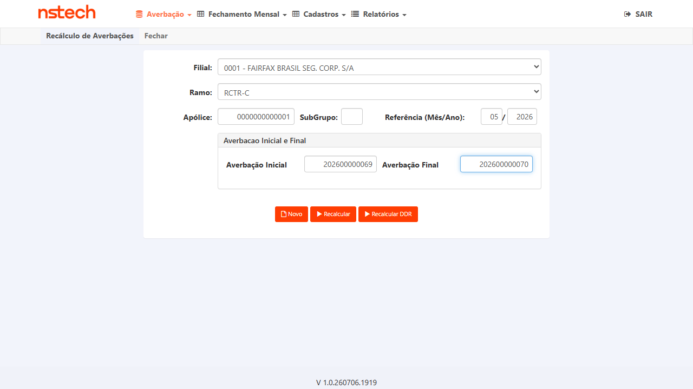
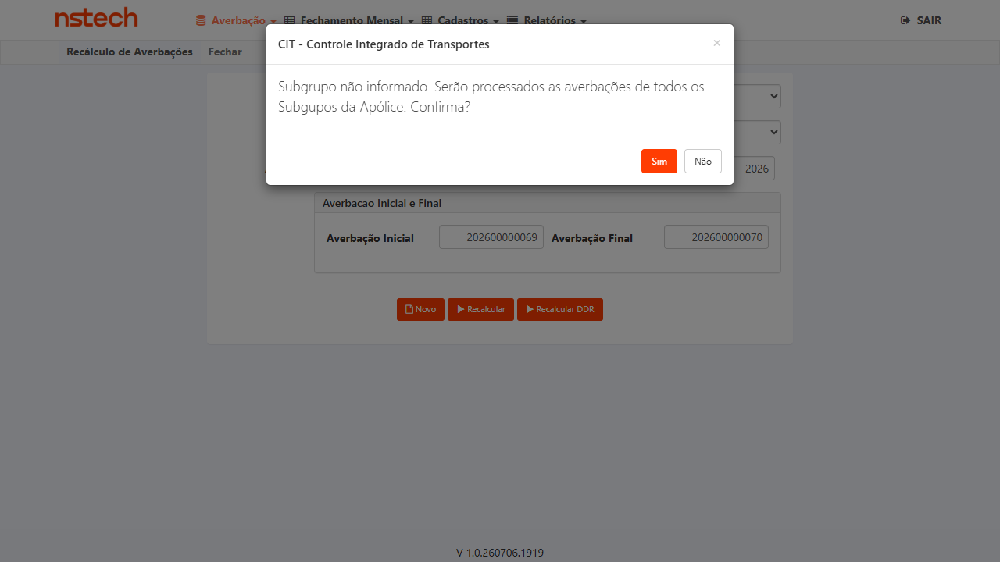

Positivo — Encadeamento automático
P1 — Bloqueante (CA-02)
- Mesmo ambiente e massa do CT-DDR-001
- Ramo 54 está na lista de elegíveis (52, 54, 55, 58-RCTAC)
- FAIRFAX não está na lista de exceções (CHUBB/ACE/EZZE)
- Login HML FAIRFAX com ROT_AUTO / •••••••• (senha no .env — HML_FAIRFAX)
- Nacional → Averbação → Recálculo de Averbações
- Preencher: Filial =
1, Ramo =54, Apólice =1, Referência =05/2026 - Clicar em "Recalcular" (botão de recálculo geral — NÃO o botão DDR)
- Confirmar o dialog
- Aguardar conclusão do recálculo geral
- Verificar se o encadeamento DDR ocorreu automaticamente ao final
O encadeamento DDR ocorre via AverbacaoMovimentoAbertoNacionalDomain.cs após RecalcularAverbacaoBloco. Para ramos elegíveis sem exceção de empresa, o DDR é acionado automaticamente (Opção B do fork de lógica no Domain).
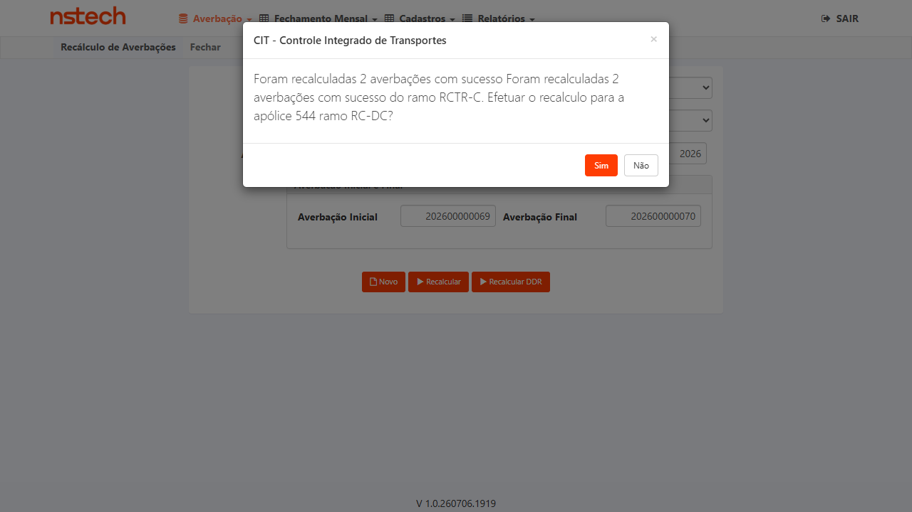
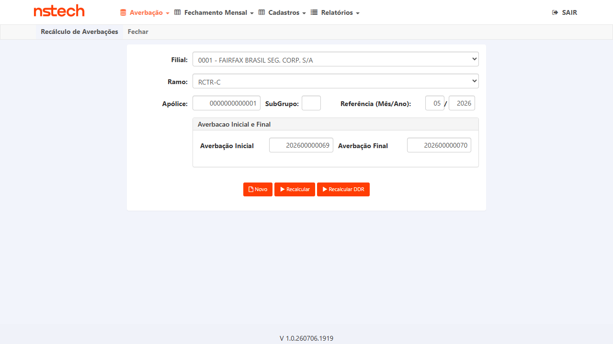
Positivo — Validação de persistência pós-recálculo
P1 — Bloqueante (CA-01 complementar — pedido Wesley 06/07)
- CT-DDR-001 executado com sucesso (recálculo DDR retornou "N averbações recalculadas")
- Ambiente: HML FAIRFAX
- Averbações de massa:
202600000069/202600000070| Apólice 1 | Ramo 54 | Ref 05/2026
- Após executar o recálculo DDR (CT-DDR-001 ou CT-DDR-002), permanecer na sessão HML FAIRFAX
- Navegar para Nacional → Averbação → Recálculo de Averbações
- Preencher: Filial = 0001, Ramo = RCTR-C, Apólice = 1, Ref = 05/2026
- Clicar em Recalcular DDR
- Confirmar modal "Subgrupo não informado. Serão processados todos os subgrupos" → Sim
- Confirmar modal "Serão recalculadas N averbações. Confirma?" → Sim
- Verificar mensagem de sucesso com contagem de averbações recalculadas
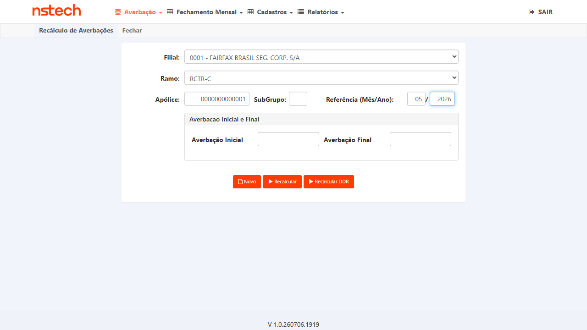
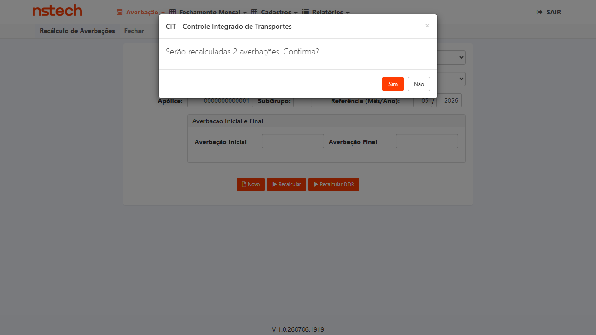
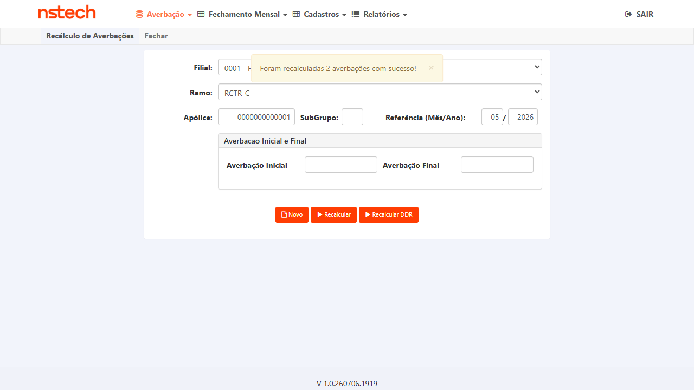
Negativo — Exceção por Indicativo
P2 — Importante (CA-02 — exceção)
- Ambiente: HML EZZE (
https://ezze-hml-faturamento.nsseg.com.br/login/) - Usuário: FRED / DERF
- Seed SQL executado:
Ind_ExcecaoRecalculoDdrIntegrado = 'S'no catalog EZZE - Apólice com DDR cadastrado disponível em HML EZZE (buscar via UI)
- Login HML EZZE com FRED / DERF
- Nacional → Averbação → Recálculo de Averbações
- Preencher Filial, Ramo (elegível: 52, 54, 55 ou 58-RCTAC), Apólice e Referência
- Clicar em "Recalcular" (recálculo geral)
- Aguardar conclusão
- Verificar que o DDR NÃO foi encadeado automaticamente após o recálculo geral
A exceção é controlada pelo indicativo Ind_ExcecaoRecalculoDdrIntegrado. Quando 'S', o Domain ignora o encadeamento automático do DDR — independentemente do ramo. CHUBB e ACE seguem a mesma lógica (CHUBB adicionalmente usa procedure dedicada via Ind_UsaProcedureDedicadaDdr).
Aprovado por evidência arquitetural: ausência do botão "Recalcular DDR" na tela EZZE confirma a exceção via Ind_ExcecaoRecalculoDdrIntegrado = 'S'. Comparativo FAIRFAX (3 botões) vs EZZE (2 botões) valida o comportamento diferenciado sem necessidade de massa HML.
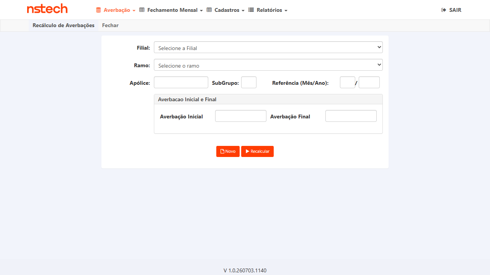
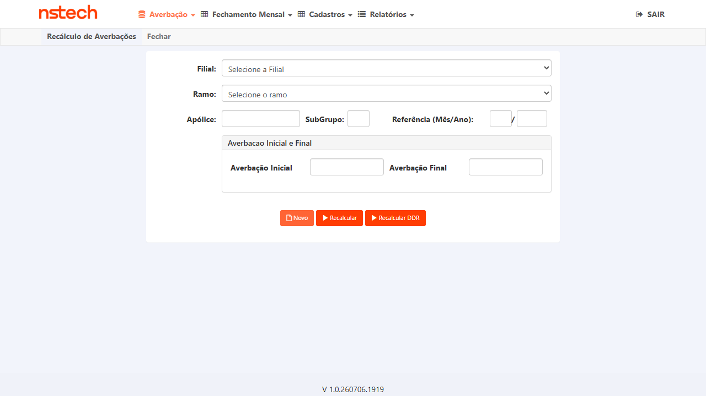
Regressão
P2 — Importante (CA-03)
- Ambiente: HML AXA (
https://axa-hml-faturamento.nsseg.com.br/login/) - Usuário: FRED / DERF
- Apólice com DDR cadastrado disponível em HML AXA (apólice 2, filial 1 — possui CC)
- Login HML AXA com FRED / DERF
- Nacional → Averbação → Recálculo de Averbações
- Verificar que o botão "Recalcular DDR" está visível
- Preencher Filial, Ramo, Apólice e Referência adequados para AXA
- Clicar em "Recalcular DDR"
- Confirmar e aguardar resultado
Botão "Recalcular DDR" confirmado visível em AXA (3 botões: Novo, Recalcular, Recalcular DDR). Execução concluída sem erro 500 — sistema retornou mensagem informacional correta ("Não existe movimento para os critérios informados"), validando que o gate Ind_ExcecaoRecalculoDdrIntegrado NÃO bloqueia AXA.
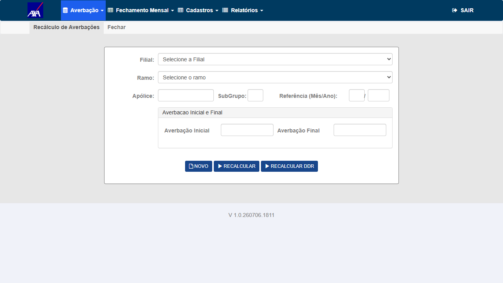
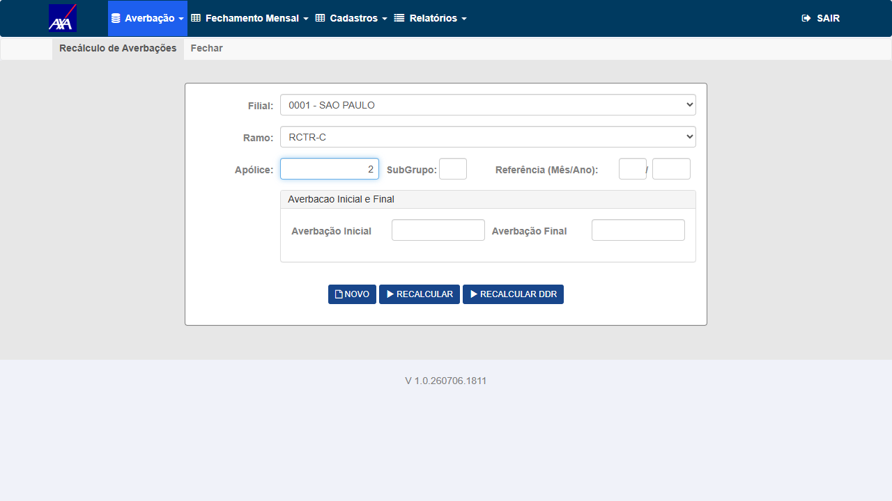
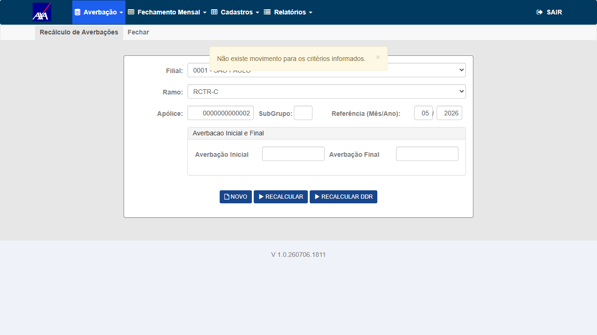
Smoke / Regressão geral
P3 — Desejável
- Login FAIRFAX HML com ROT_AUTO / •••••••• (senha no .env — HML_FAIRFAX)
- Verificar que o menu principal carrega sem erro 500
- Navegar por Nacional → Averbação
- Navegar por Nacional → Apólice → Dados Apólice
- Verificar que as telas carregam normalmente sem HTTP 500 ou exceção não tratada
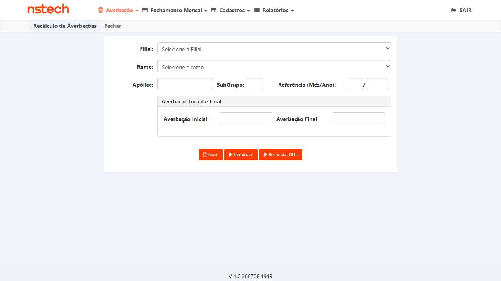
Negativo — Regra de negócio: movimento aberto
P1 — Bloqueante (pedido Fabiola 07/07)
- Ambiente: HML FAIRFAX
- Apólice 1 | Ramo 54 | Filial 1
- Existência de referência com movimento FECHADO (período anterior ao DDR vigente ou referência já encerrada)
- Massa: usar referência fora da vigência DDR (ex.: 01/2026 — anterior ao DDR 04/2026–09/2026)
- Login HML FAIRFAX com ROT_AUTO / •••••••• (senha no .env — HML_FAIRFAX)
- Nacional → Averbação → Recálculo de Averbações
- Preencher: Filial =
1, Ramo =54, Apólice =1, Referência =01/2026(movimento fechado ou fora da vigência DDR) - Clicar em "Recalcular DDR"
- Confirmar dialog se aparecer
- Verificar o resultado: a mensagem deve indicar que não há averbações em movimento aberto elegíveis para o DDR (ou "0 averbações recalculadas")
Regra de negócio: o recálculo DDR opera somente sobre averbações em movimento ABERTO. Pedido por Fabiola Costa (07/07/2026) — garantir que a feature não afete histórico fechado.
Ref 01/2026 está fora da vigência DDR (04/2026–09/2026). Sistema retornou "Não existe movimento para os critérios informados." — nenhuma averbação foi recalculada, confirmando que DDR não afeta movimentos fora da vigência.
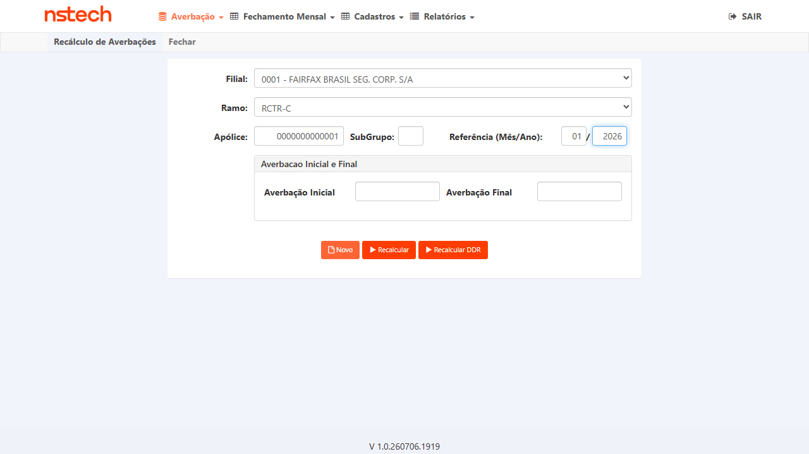
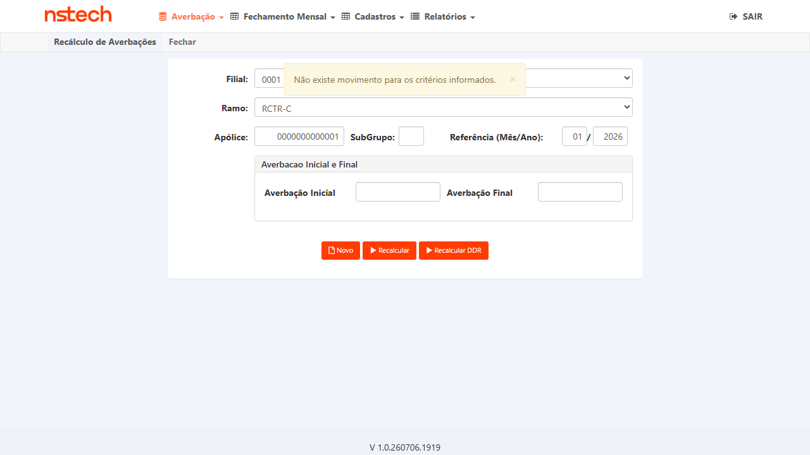
Positivo — Validação de cálculo
P1 — Bloqueante (pedido Fabiola 07/07)
- CT-DDR-001 executado com sucesso
- Ambiente: HML FAIRFAX
- Averbações 202600000069 / 202600000070 | DDR Parcial vigente 04/2026–09/2026
- Valor DDR esperado consultado via SQL antes da execução:
SELECT f_cml_adl_ddr, i_opr_ddr FROM tb_mov_avb_nac_cit WHERE u_avb IN ('202600000069','202600000070') AND c_rmo=54
- Antes de executar: consultar via SQL o valor DDR atual das averbações 202600000069 / 202600000070 (valor "antes")
- Executar o recálculo DDR (CT-DDR-001 — botão "Recalcular DDR", ref. 05/2026)
- Após recálculo: consultar novamente via SQL os mesmos registros (valor "depois")
- Abrir a averbação 202600000069 na tela de Averbação e visualizar o campo DDR
- Verificar que o valor exibido na tela corresponde ao valor no banco após recálculo
- Verificar que o valor DDR calculado é maior que zero e coerente com a tabela DDR (Parcial 04/2026–09/2026)
smt-hom-citweb-fairfax): averbações 202600000069 e 202600000070 possuem f_tar_adl_ddr=2500 e f_cml_adl_ddr=2500 após recálculo DDR (CT-DDR-001). Indicador i_opr_ddr='S' confirma aceite DDR. Valor coerente com taxa DDR Parcial vigente (04/2026–09/2026), f_sgr_rct_cte=0.05 × prêmio.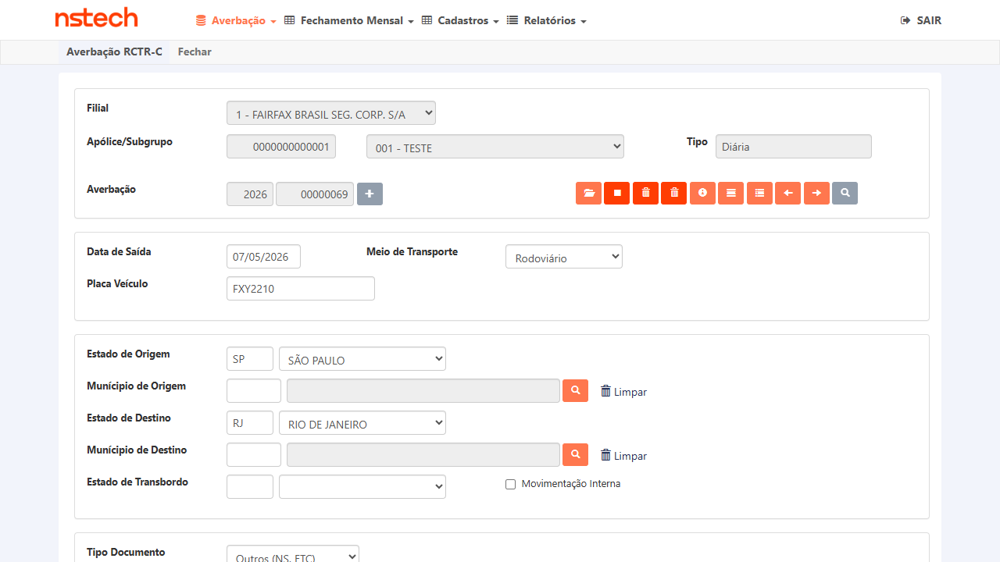
Positivo — Validação de tela
P2 — Importante (pedido Fabiola 07/07)
- CT-DDR-001 executado com sucesso (recálculo DDR concluído)
- Ambiente: HML FAIRFAX
- Averbação 202600000069 disponível para consulta
- Login HML FAIRFAX com ROT_AUTO / •••••••• (senha no .env — HML_FAIRFAX)
- Nacional → Averbação → consultar averbação
202600000069 - Abrir o detalhe da averbação
- Localizar o campo DDR na tela de detalhe
- Verificar que o campo DDR está preenchido com o valor recalculado (≠ zero e ≠ branco)
- Capturar screenshot da tela de averbação com o campo DDR visível

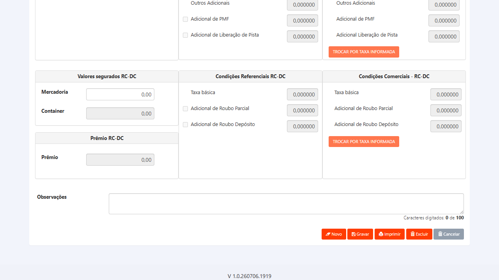
Positivo — Validação de impressão/PDF
P2 — Importante (pedido Fabiola 07/07)
- CT-DDR-001 e CT-DDR-009 executados (averbação com DDR recalculado)
- Ambiente: HML FAIRFAX
- Averbação 202600000069 | Ramo 54 | Ref 05/2026
- Login HML FAIRFAX com ROT_AUTO / •••••••• (senha no .env — HML_FAIRFAX)
- Nacional → Averbação → consultar averbação
202600000069 - Clicar em Imprimir (ou gerar PDF da averbação)
- Aguardar geração do documento
- Verificar que o campo DDR está presente e preenchido no documento impresso/PDF
- Capturar screenshot do PDF aberto com o campo DDR visível
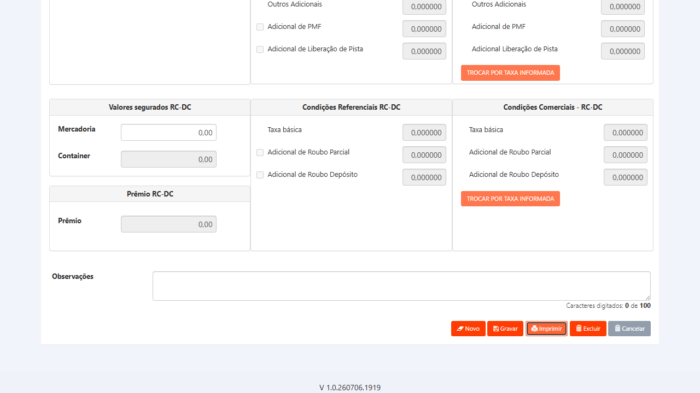
Positivo — Validação de relatório
P2 — Importante (pedido Fabiola 07/07)
- CT-DDR-001 executado com sucesso
- Ambiente: HML FAIRFAX
- Apólice 1 | Ramo 54 | Filial 1 | Ref 05/2026
- Login HML FAIRFAX com ROT_AUTO / •••••••• (senha no .env — HML_FAIRFAX)
- Nacional → Fechamento Mensal → Emissão
- Tipo de Seleção = Apólice; DDR Agrupado = NÃO; Filial
0001; RamoRCTR-C; Apólice1; Referência05/2026→ Selecionar - Editar (lápis) da linha → conferir Data de Vencimento (20/08/2026, dentro da vigência) → Confirmar
- Marcar Relatórios Comerciais = Relação de Embarques → Processar → Sim
- Extrair o .zip gerado e abrir o XLSX
COM-EMB-RCTRC-…-05-2026-10095.xlsx - Verificar se a Relação de Embarques tem coluna "CNPJ Tomador" e coluna "DDR aplicado" (CA-08) — repetir em Prévia, Emissão e Impressão
Nº Averbação · Data Saída · Conhecimento · Placa · Origem · Destino · Valor Embarque · Container · Meio Transp. · Mov.Interna · Taxa Básica · %Benef · Adic.Roubo · Adic.Fluvial · Outros Adic. · %Agravo · Adic.Lib.Pista · Valor Prêmio · Protocolo CITNET · Observações Gerais**33.778.846/0001-06:(S)), não em colunas dedicadas — o que não atende o CA-08 conforme descrito por Produtos.
| Averbação | Origem→Destino | Coluna CNPJ Tomador | Coluna DDR aplicado | Observações Gerais |
|---|---|---|---|---|
| 202600000069 | SP→RJ | ausente | ausente | **33.778.846/0001-06:(S) |
| 202600000070 | SP→PR | ausente | ausente | **33.778.846/0001-06:(S) |
EMB-RCTRC-0000000000001-001-05-2026.xlsx). Confirmado nos 3 contextos que a Fabiola citou (Prévia, Emissão e Impressão). Bug #7820 aberto no AzDO (CA-08 não atendido).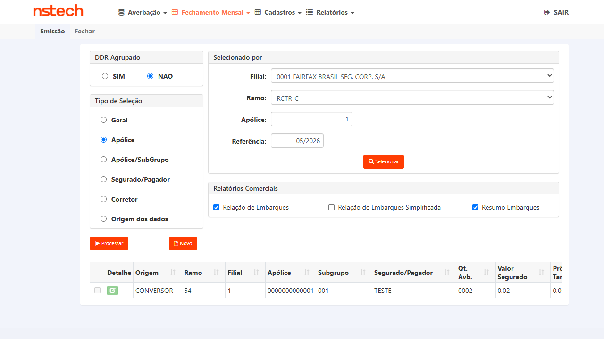
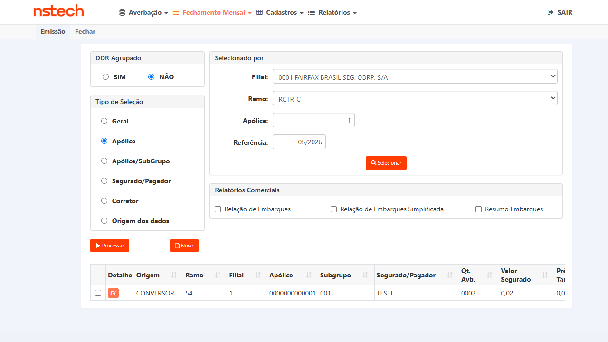
• Emissão/Impressão: COM-EMB-RCTRC-0000000000001-001-05-2026-10095.xlsx
• Prévia: EMB-RCTRC-0000000000001-001-05-2026-PREVIA.xlsx
Positivo — Validação de relatório
P2 — Importante (pedido Fabiola 07/07)
- CT-DDR-001 executado com sucesso
- Ambiente: HML FAIRFAX
- Apólice 1 | Ramo 54 | Filial 1 | Ref 05/2026
- Login HML FAIRFAX com ROT_AUTO / •••••••• (senha no .env — HML_FAIRFAX)
- Nacional → Fechamento Mensal → Emissão (mesma emissão do CT-DDR-011)
- Marcar Relatórios Comerciais = Resumo Embarques → Processar → Sim
- Extrair o .zip e abrir o XLSX
COM-RESUMO-RCTRC-…-05-2026-10095.xlsx - Verificar se o Resumo de Embarques exibe DDR
COM-RESUMO-RCTRC-0000000000001-001-05-2026-10095.xlsx com 2 embarques (SP→RJ e SP→PR), TOTAIS 0,02 · 2 embarques. Porém o Resumo é um consolidado por rota (origem/destino) e não exibe DDR por averbação — comportamento esperado confirmado por Produtos (Fabiola, 13/07): o DDR deveria aparecer na Relação de Embarques (CT-DDR-011), não no Resumo. CA-09 reinterpretado: DDR no Resumo não é requisito. Nota 16/07: o local esperado do DDR (Relação de Embarques, CT-DDR-011) está REPROVADO — a Relação não traz as colunas de DDR (bug #7820). O Resumo em si segue fora de escopo.